TCP可靠传输与拥塞控制
1. 介绍
传输控制协议 TCP（Transmission Control Proticol）是一种面向连接的、可靠的、基于字节流的通信协议，具有拥塞控制功能。在计算机网络 OSI 模型中，位于传输层。
所谓连接，即双方维护了一组数据结构记录状态，并根据一个状态机进行状态转移或者相应的处理机制。
在同一层还有用户数据报协议 UDP（User Datagram Protocol），与 TCP 基本相反，UDP 无连接、不可靠、面向报文。但这不代表使用 UDP 就无法实现可靠传输，只要在上面的应用层精心设计，也能够达到可靠传输的效果，例如 Google 的 QUIC 协议。
由于 TCP 非常复杂，在一文中介绍其全部特性是不太现实的，本文主要介绍可靠传输和拥塞控制两个特性。
首先需要关注一下 TCP 的头格式，如下所示。
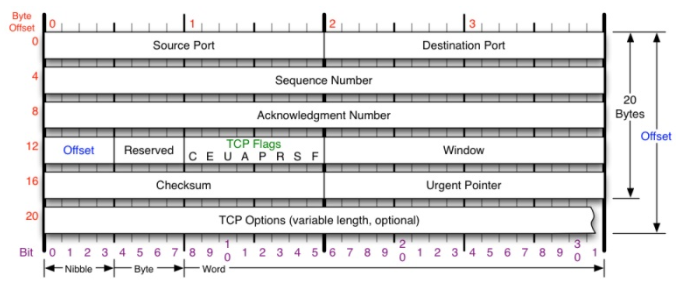
其中关于可靠传输和拥塞控制主要关注以下几个部分：
- Sequence Number：包的序号，用来解决网络包乱序问题。下文统一称作 seq；
- Acknowledgement Number：确认收到的包序号，解决可靠传输问题。下文统一称作 ack；
- Window：接收窗口，可以用于用于实现拥塞控制；
- CheckSum：校验和，用来验证包数据的正确性。
2. 可靠传输
TCP 的可靠传输依赖校验和、确认应答、重传多个机制共同实现。
2.1 校验和
TCP 首部的校验和 CheckSum 是对 TCP 首部和数据共同计算的结果，在发送方生成，由接收方进行验证，校验不通过则会丢弃这个包，保证了 TCP 数据包在网络传输中的数据正确性。
2.2 确认应答
2.2.1 停止等待协议
TCP 是面向流的，其中 seq 表示包中的第一个数据字节的序号。当接收方收到包后，需要向接收方发送已经收到的数据字节序号 ack。例如发送方的包的 seq 为 1024，长度为 100（即 1024 - 1123），那么接收方收到这个包后，需要发送 ack = 1123 的确认，。
那么如何协调发送和确认呢？一个直观想法是发送方发送一个包后，需要等待这个包的确认，才能发送下一个包，这被称为停止等待协议。
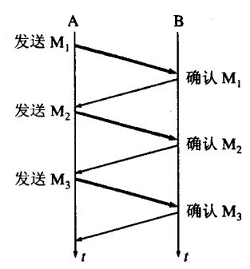
2.2.2 滑动窗口
上述方案是串行发送，网络利用率很低，于是引入了连续 ARQ 协议和滑动窗口。
滑动窗口是 TCP 协议的关键所在，发送方和接收方分别会维护一个发送窗户和接收窗口，窗口的单位是字节。下面以一个发送窗口举例：
TCP 是双工的，即客户端和服务器可以为发送方和接收方，这里以单工的形式进行介绍，不影响对 TCP 的理解。
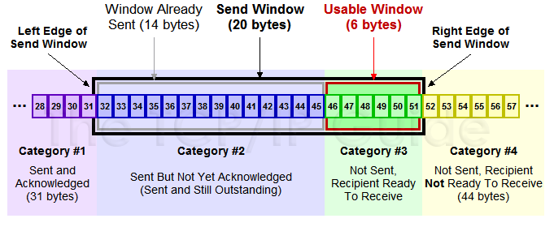
上图分为 4 个部分：
#1是已收到 ack 确认的数据，无需再发送；#2是还没收到 ack；#3是在窗口中还没发送的，接收方还有空间接收；#4是窗口以外的数据，接收方没有空间。
其中 #2 和 #3 为发送窗口，连续 ARQ 协议规定，当发送方收到一个 ack 后，就把发送窗口往前滑动一个分组的位置，而接收方一般采用累计确认的方式，即对收到的最后一个分组进行确认，例如接收方收到 1023、1024、1026 - 1100 的数据，也只会对 1024 进行确认。
当发送方收到确认后，对窗口进行相应的移动。例如收到了 36 的 ack 后，就可以发送 46 - 51 的数据。
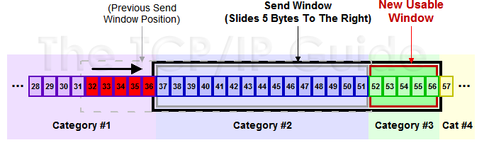
2.2.3 糊涂窗口综合症
如果服务端（接收方）处理很慢，接收窗口不断缩小，那么发送方如何处理？根据上面的理论，当接收窗口大小为 0 时，发送方不会发送数据了。等到接收方处理完数据之后，腾出几个字节的窗口，发送方会立马发送这几个字节的数据。
这被称为糊涂窗口综合症，它的问题是 TCP 的首部需要 40 字节，却只携带了少量数据，类似可以坐上千人的高铁，却只坐了几个人，造成极大的资源浪费。
对于糊涂窗口综合症，一般有两个方案：
接收方处理：采用 David D Clark’s 方案，在接收窗口很小时，直接给发送方回复接收窗口大小为 0，阻止发送数据，等待接收方处理了一部分数据之后再恢复发送；
发送方处理：采用 Nagle 算法，在未收到之前发送数据的 ack 时，即使发送窗口有剩余也不进行发送，而是积攒数据。
Nagle 算法是默认打开的，如果程序需要较高的交互性，记得关闭这个算法。
2.3 重传
上述方案针对的理想的网络环境，如果发送的包或者确认的包在网络中丢失，为了保证可靠传输，就必须引入重传机制。常见的重传机制有：超时重传、快速重传、SACK。
2.3.1 超时重传
超时重传即发送数据时，设定一个计时器，超过指定时间仍没有收到 ack，则重发这个数据。
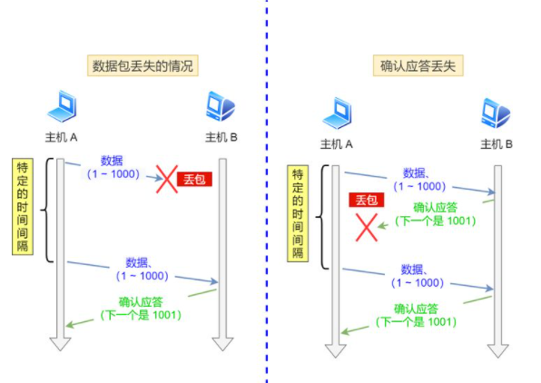
超时时间设定具体可看《计算机网络 谢希仁》 5.6.2 小节。
2.3.2 快速重传
超时重传用时间驱动，每次都需要等待超时时间，周期较长，因此 TCP 引入了以数据驱动的快速重传机制。
快速重传当收到三个连续相同的 ack 之后，即使未超时，也会立即重传数据。
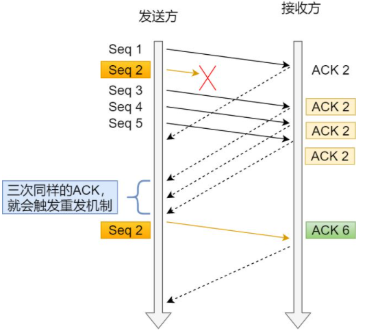
2.3.3 SACK
如果发送方发送了 1 - 100 的数据，其中 3 的数据丢失，即使引入了快速重传，接收方仍然只会对 2 进行确认，发送方需要发送 3 - 100 的数据。
一种更好方式是 SACK 机制，在 TCP 头部中会添加 SACK 字段，SACK 字段记录已经收到的数据，接收方根据 SACK 字段选择性的发送数据。
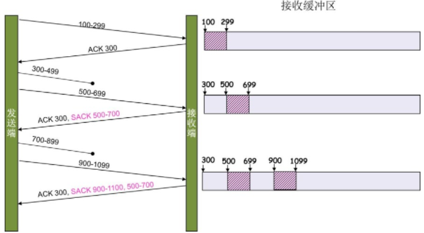
SACK 机制需要消耗发送方的资源，发送方收到 SACK 字段后，经过遍历才能确认需要发送的数据。SACK 机制默认打开，需要根据业务需要进行控制。
3. 拥塞控制
上文说到 TCP 使用了滑动窗口做了流量控制（根据发送窗口和接收窗口同时限制），但是不止于此，TCP 是个无私的协议，当拥塞发生时，会主动降低自己的发送速率。
发送方维护了一个拥塞窗口 cwnd，发送窗口会取 cwnd 和接收窗口的最小值。
在 1990 年 TCP Reno 之后，拥塞控制主要有 4 个算法：慢开始、拥塞避免、拥塞发生和快恢复。
3.1 慢开始
慢开始的思想是刚加入网络的连接，慢慢进行提速：
- 初始化 cwnd = 1，发送报文 m1；
- 每收到一个 ack，cwnd 自增。例如收到 m1的 ack，则 cwnd = 2，可以发送 m2 和 m3；当收到 m2 和 m3 的 ack 之后，cwnd = 4；下一轮收到 m4 - m7 的 ack 后，cwnd = 8。
- 每经过一个传输轮次，cwnd = cwnd * 2，指数上升；
- 到达 ssthresh（slow start threshold），进行拥塞避免。
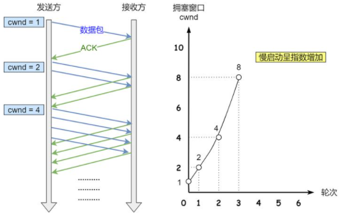
3.2 拥塞避免
当 cwnd >= ssthresh 之后，就会进入拥塞避免算法，ssthresh 一般为 65535 字节。
拥塞避免的规则是：收到一个 ack，cwnd 增加 1/cwnd，即每经过一个传输轮次，cwnd = cwnd + 1，变为线性增长。
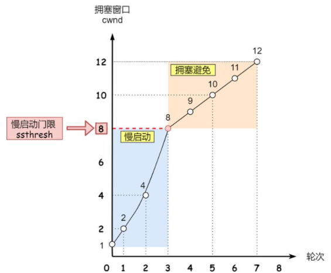
3.3 拥塞发生
拥塞发生算法即在发生拥塞时，降低发送速率。
当网络出现拥塞之后，就会出现分组丢失，进而触发重传。也就是说，出现重传是网络拥塞的特征。上文提到，重传包括超时重传和快速重传，拥塞发生算法对两种重传的处理机制有所不同：
超时重传：触发了超时，证明网络拥塞已经很严重了。此时会设置 ssthresh = cwnd / 2，cwnd = 1，随后采用慢启动算法。
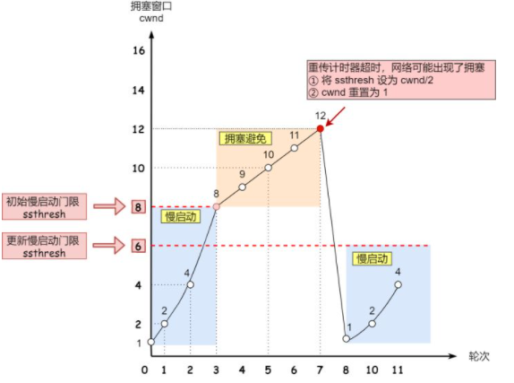
快速重传：还能收到 ack，网络情况比超时重传的时候好，可以采用比较温和的方式。此时会设置 cwnd = cwnd / 2，ssthresh = cwnd，进行快恢复算法。
3.4 快恢复算法
快恢复算法一般配合快速重传使用，其算法如下：
- cwnd = ssthresh + 3（收到了 3 个 ACK，证明 3 个数据包都被收到了）；
- 重传丢失的数据包，执行拥塞避免算法。

3.5 其他拥塞控制算法
上面已经介绍 TCP Reno 的 4 个机制，但 Reno 毕竟是 1990 年的产物了，在随后的发展中产生了 BIC 和 CUBIC 算法，具体可见 深入理解TCP拥塞控制——从BIC到CUBIC。
linux 2.6.8 默认使用 BIC，BIC 的思想是使用二分查找去搜索合适的 cwnd。
linux 2.6.19 默认使用 CUBIC，用公式了摆脱了对 RTT 的依赖。
上面介绍的拥塞控制算法都是基于分组丢失来控制 cwnd 的大小，而简单而粗暴地将窗口大小的数据全部突发出去，这往往会造成路由器的排队。
linux 4.9 中引入了 BBR 算法，BBR 是 Google 在 2016年发布的拥塞算法，BBR 在计算 cwnd 的同时，还会计算数据的发送时间间隔，具体可见 BBR:Congestion-Based Congestion Control。
4. 总结
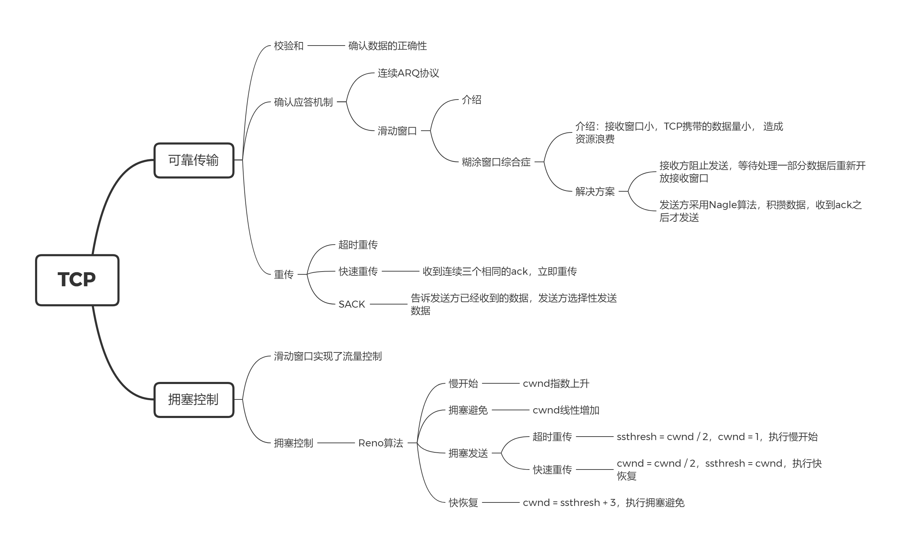